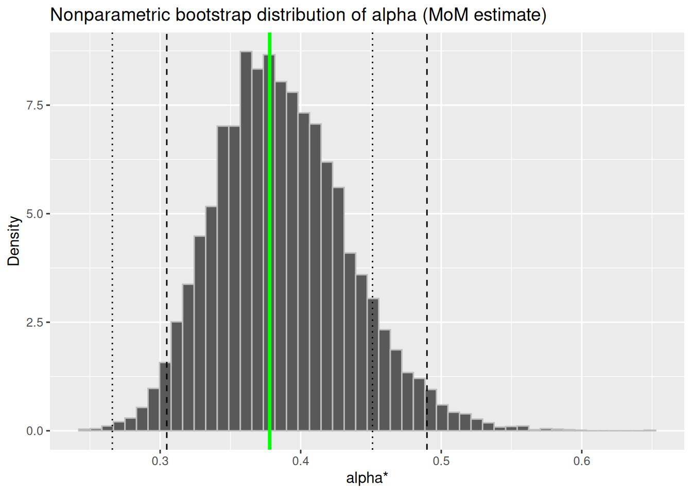
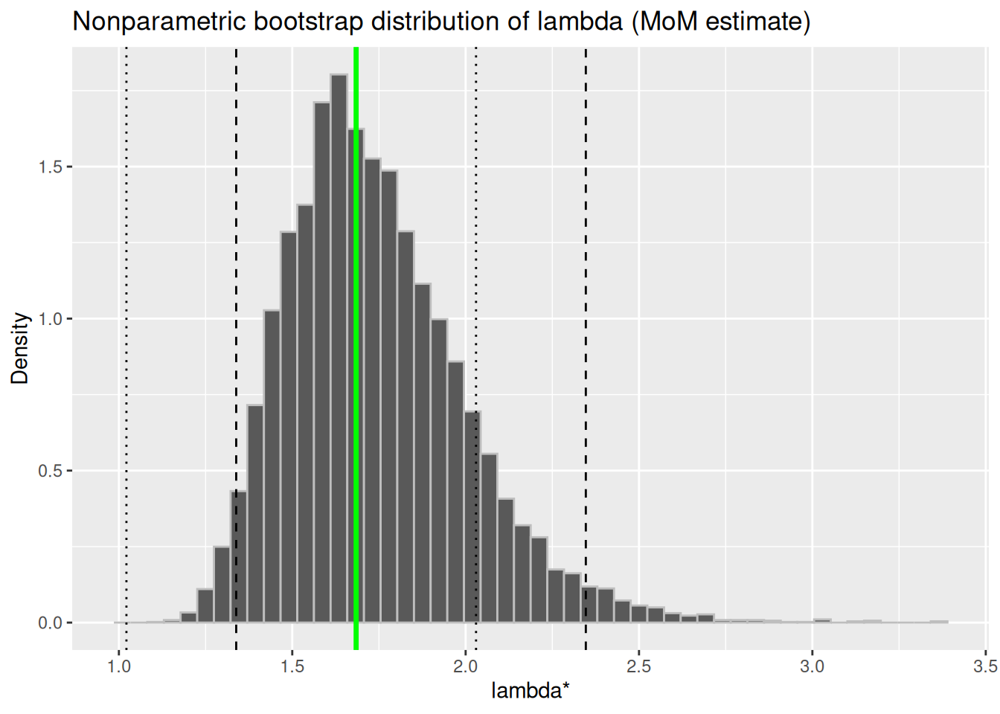
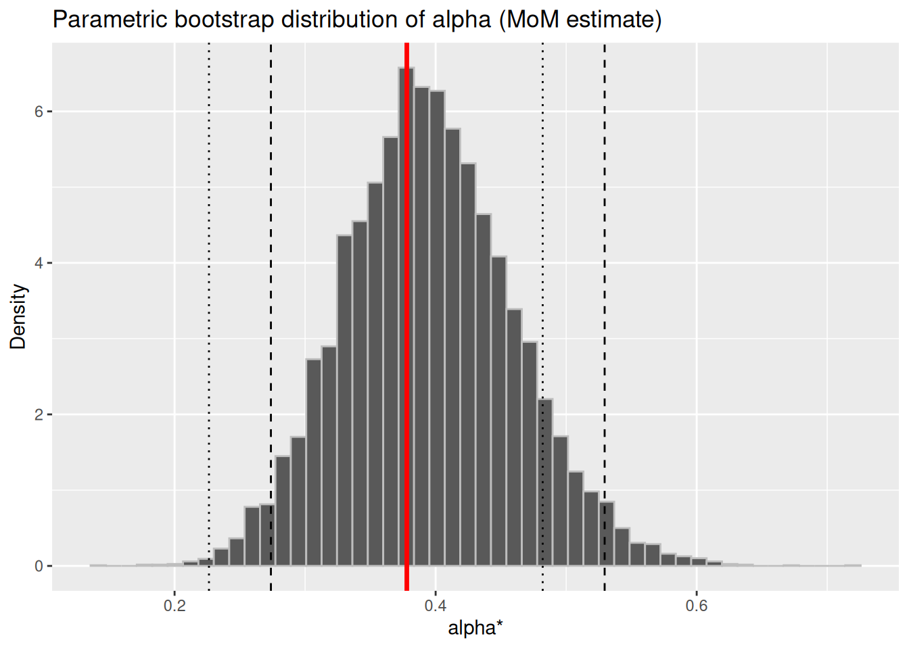
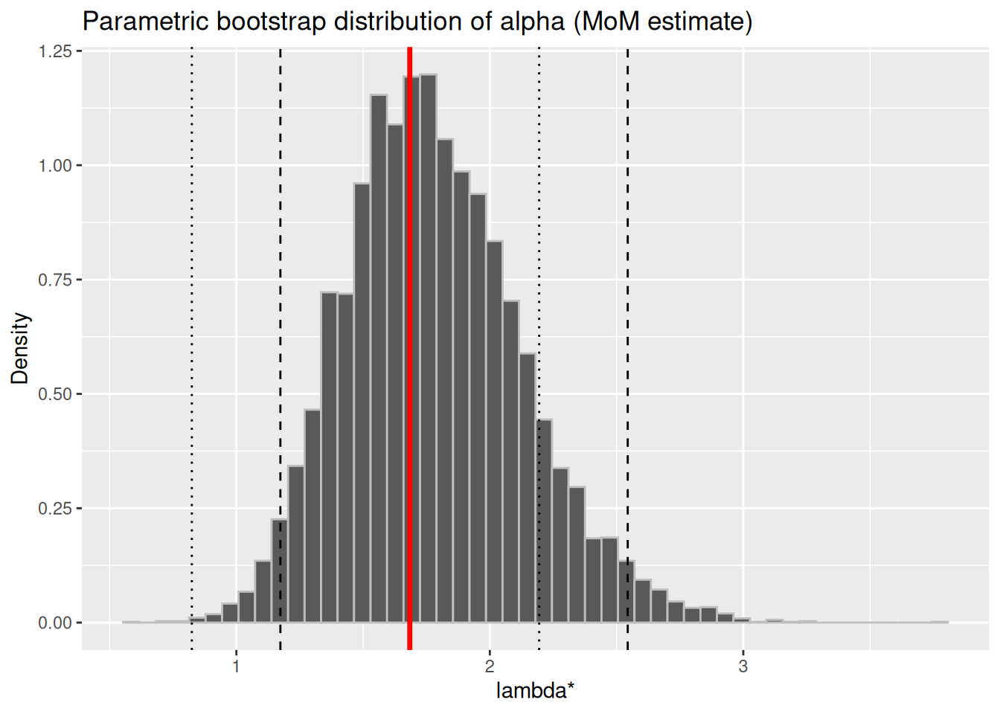

More about the Bootstrap; and Introducing Maximum Likelihood Estimation
The Bootstrap
We have now encountered the bootstrap method a few times, and seen examples of the bootstrap distribution. To reiterate what we are talking about: The bootstrap is a resampling method. The method was first introduced by Bradley Efron in 1979, in a paper called “Bootstrap methods: another look at the jackknife.” It is a very powerful technique that can be used to quantify the uncertainty associated with a given estimator.
Resampling methods are very effective tools that modern statistics relies on. When we talk about confidence intervals that are based on the normal, or the \(t\)-distribution, we are relying on the asymptotic distribution of our estimator being approximately normal. In theory, to construct the sampling distribution of a sample statistic, we would have to draw all samples from the population, compute the statistic for each sample, and the distribution of these statistics is the sampling distribution.(Hesterberg 2015)
In practice, though, we have only one sample. This is where the bootstrap comes in. We draw samples from “an estimate of the population, and compute the statistic of interest for each sample”. The distribution of the statistics is called the bootstrap distribution.
The bootstrap is based on a principle we have encountered many times so far: if something is unknown, you substitute an estimate for it. What do we use as an estimate for the population? Here is a nice diagram of the bootstrap, created by Deborah Nolan. You can view it in context in the notes for Stat 20:
The most common method is the nonparametric bootstrap in which we draw samples with replacement from the sample. (What we are actually doing is drawing samples from the empirical distribution \(\hat{F}_n\). This distribution places an equal probability of \(1/n\) on each data point.)
There is also the parametric bootstrap, in which we assume a distribution, estimate its parameters using our sample, and then generate samples from this distribution with the estimated parameters.
The most important point of difference between the sampling and bootstrap distributions is that the bootstrap distribution will be centered at the observed statistic,notthe population parameter. This means we cannot use the bootstrap distribution to get a better estimate for the population parameter, rather we use it to give us an idea of the accuracy of the original estimate.
Also, this means that we should be careful about using the quantiles of the bootstrap distribution of \(\hat\theta^*\) to estimate the quantiles of the sampling distribution of \(\hat\theta\) if our distribution is not symmetric.
Warning
Remember! Bootstrap works only if the sample is large enough to accurately represent the population distribution. Bootstrapping cannot fix the problem of using a small sample for inference.
Some methods of computing confidence intervals are listed in the previous chapter. You will also find a detailed example.
Rainfall example using boot()
A very useful package for actually doing the bootstrap in R is called boot. You will have to load it with library(boot), and then you can use it to generate bootstrap samples, and also compute confidence intervals of whatever type you want. You can read the documentation, or use the Help in RStudio (type ?boot in the console). We can then take the statistics computed by boot(), make a data frame, and input this into ggplot() to visualize the bootstrap distribution.
Recall that the data are from a study of the natural variability of rainfall. The rainfall of summer storms was measured by a network of rain gauges in southern Illinois for the years 1960–1964 (Rice 2006). The average amount of rainfall (in inches) from each storm, by year, is contained in the files, ,\(\ldots\), (you can find these in bCourses.) We have previously seen that a Gamma distribution seems appropriate and computed the method of moments estimates for the shape\(\alpha\) and rate\(\lambda\) parameters:
Using the function we created in the last chapter to compute our estimates.
Code
# function to compute alpha and lambda given a vector# note that we need to input a VECTOR not a df.gamma_mom <-function(x) { mu1 <-mean(x, na.rm =TRUE) mu2 <-mean(x^2, na.rm =TRUE) sigma_hat_sq <- mu2-mu1^2 lambda <- mu1/sigma_hat_sq alpha <- mu1^2/sigma_hat_sqreturn(c(alpha = alpha , lambda = lambda))}theta_hat <-gamma_mom(pull(il_rain, rain_inches))cat("theta_hat = alpha_hat lambda_hat\n", theta_hat)
We did all this before. All we will do now is that we will use a different method to compute the bootstrap distributions and parameters.
Nonparametric Bootstrap
We will resample the data. Now, the function boot() needs at least three inputs: data, statistic: a function that computes the statistic of interest, and R which the number of bootstrap samples (we previously called this number \(B\)). So first let’s write this very specific function. This, when boot applies it to the data, will return a vector containing the statistic whose bootstrap distribution we want, and it has to take as input the original dataset that will be passed to boot() and a vector of row numbers (called indices) that boot() will generate for each sample. The function has to have a very specific form as shown below in a little toy example that creates a bootstrap of the mean.
## creating a demo statistic function to input into boot()## you must write your function with "data" and "indices" as the arguments## and then use the indices.demo_stat <-function(data, indices) { d <- data[indices] # Resample using the indicesreturn(mean(d)) # Calculate and return your statistic}a <-boot(1:5, demo_stat, R =2)
What boot() does is that it generates R bootstrap samples by resampling the rows, computes the statistic for each, and returns the original observed value, the bootstrap bias estimate and the bootstrap standard error, among other things. You can explore the returned values, for example, as demonstrated here:
a$t0
[1] 3
a$t
[,1]
[1,] 3.0
[2,] 2.8
a$data
[1] 1 2 3 4 5
a$R
[1] 2
Now, let’s use boot() to generate our bootstrap statistics:
First, set a value for \(B\) and define the function statistic (the argument in boot()):
B <-10000## define how many bootstrap samples we want## define the function we will use to compute each alpha_hat_* and lambda_hat_*stat_np_gamma_mom <-function(data, indices) { x_star <- data[indices] # resampling the data using the indicesgamma_mom(x_star) # calculate the statistic }
Next, call boot() with the rainfall data and the function defined above:
## calling it boot_np_new to distinguish it from our earlier boot_npboot_np_new <-boot(data = il_rain$rain_inches, statistic = stat_np_gamma_mom, R = B)boot_np_new$t0 ## observed value
alpha lambda
0.3779155 1.6841748
dim(boot_np_new$t) ## should return R x 2, because theta_hat is a vector with two parameters.
[1] 10000 2
head(boot_np_new$t) ## the first six bootstrap values of theta_hat
Let’s compute the confidence intervals using the very convenient function boot.ci() that takes as input the object returned by boot(). So we will input boot_np_new into boot.ci(). We specify the type of intervals we want, and index=1 indicates which column of the output matrix boot_np_new we should consider. Let’s first compute the percentile and basic intervals for \(\alpha\):
ci_np_alpha <-boot.ci(boot_np_new, type =c("perc", "basic"), index =1)ci_np_alpha
BOOTSTRAP CONFIDENCE INTERVAL CALCULATIONS
Based on 10000 bootstrap replicates
CALL :
boot.ci(boot.out = boot_np_new, type = c("perc", "basic"), index = 1)
Intervals :
Level Basic Percentile
95% ( 0.2646, 0.4515 ) ( 0.3043, 0.4912 )
Calculations and Intervals on Original Scale
And then compute them for \(\lambda\):
ci_np_lambda <-boot.ci(boot_np_new, type =c("perc", "basic"), index =2)ci_np_lambda
BOOTSTRAP CONFIDENCE INTERVAL CALCULATIONS
Based on 10000 bootstrap replicates
CALL :
boot.ci(boot.out = boot_np_new, type = c("perc", "basic"), index = 2)
Intervals :
Level Basic Percentile
95% ( 1.010, 2.032 ) ( 1.337, 2.359 )
Calculations and Intervals on Original Scale
Parametric Bootstrap
Let’s repeat these computations for the parametric bootstrap. Notice that though we are calling the input “mle”, that is what the function boot() calls the argument, so we will have to define it as such. We are going to input our method of moment estimates. We will first need to define a function to generate the parametric random samples. boot() calls this argument ran.gen so we will call it ran_gen_gamma()
Now we also have to define the statistic function to input to boot(). This will take as input the simulated samples, and outputs the statistic of interest:
Finally, we can run the parametric bootstrap. It might seem simpler to use replicate(), but the nice thing about using boot() is that you can then use boot.ci() on the output.
## Note that boot will pass data to gamma_mom, which expects a vector, not a data frame## so first we will extract the column, and then pass that to boot. rain <-pull(il_rain, rain_inches)boot_par <-boot(data = rain,statistic = stat_par_gamma_mom, R = B, sim ="parametric", ran.gen = ran_gen_gamma,mle = theta_hat )## checking dimensions and observed valuesboot_par$t0
alpha lambda
0.3779155 1.6841748
dim(boot_par$t)
[1] 10000 2
Now for the confidence intervals, applying boot.ci() to the output bootstrap statistics boot_par. First, for \(\alpha\):
Code
ci_par_alpha <-boot.ci(boot_par, type =c("perc", "basic"), index =1)ci_par_alpha
BOOTSTRAP CONFIDENCE INTERVAL CALCULATIONS
Based on 10000 bootstrap replicates
CALL :
boot.ci(boot.out = boot_par, type = c("perc", "basic"), index = 1)
Intervals :
Level Basic Percentile
95% ( 0.2285, 0.4815 ) ( 0.2743, 0.5273 )
Calculations and Intervals on Original Scale
And next for \(\lambda\):
Code
ci_par_lambda <-boot.ci(boot_par, type =c("perc", "basic"), index =2)ci_par_lambda
BOOTSTRAP CONFIDENCE INTERVAL CALCULATIONS
Based on 10000 bootstrap replicates
CALL :
boot.ci(boot.out = boot_par, type = c("perc", "basic"), index = 2)
Intervals :
Level Basic Percentile
95% ( 0.843, 2.215 ) ( 1.153, 2.526 )
Calculations and Intervals on Original Scale
Visualizing the Bootstrap Distributions
Now, let’s plot them. First the nonparametric bootstrap distributions with alpha and lambda, and then the parametric distributions. Note that we need to create a data frame using the bootstrap replicates to input into ggplot().
Code
## creating a data frame from boot outputboot_df_np <-as.data.frame(boot_np_new$t)boot_df_np <- boot_df_np |>rename(alpha = V1,lambda = V2) obs_alpha <- theta_hat["alpha"]obs_lambda <- theta_hat["lambda"]## Note that ci_np_alpha is a list, and we need the 4th and 5th entries of the## vector "percent" which is an item in that list. Similarly for the basic CI. You can look at## what is in ci_np_alpha by using glimpse(ci_np_alpha).p1 <-ggplot(boot_df_np, mapping =aes(x = alpha)) +geom_histogram(aes(y =after_stat(density)), bins =50, color ="grey") +geom_vline(xintercept = obs_alpha, color ="green", linewidth =1.2) +geom_vline(xintercept = ci_np_alpha$percent[4:5], linetype ="dashed") +geom_vline(xintercept = ci_np_alpha$basic[4:5], linetype ="dotted") +labs(title ="Nonparametric bootstrap distribution of alpha (MoM estimate)",x ="alpha*", y ="Density")p1

Let’s do the nonparametric plot for \(\lambda\):
Code
p2 <-ggplot(boot_df_np, mapping =aes(x = lambda)) +geom_histogram(aes(y =after_stat(density)), bins =50, color ="grey") +geom_vline(xintercept = obs_lambda, color ="green", linewidth =1.2) +geom_vline(xintercept = ci_np_lambda$percent[4:5], linetype ="dashed") +geom_vline(xintercept = ci_np_lambda$basic[4:5], linetype ="dotted") +labs(title ="Nonparametric bootstrap distribution of lambda (MoM estimate)",x ="lambda*", y ="Density")p2

Finally, let’s look at the parametric plots. First for \(\alpha\):
Code
## creating a data frame from boot outputboot_df_par <-as.data.frame(boot_par$t)boot_df_par <- boot_df_par |>rename(alpha = V1,lambda = V2) ## plotp3 <-ggplot(boot_df_par, mapping =aes(x = alpha)) +geom_histogram(aes(y =after_stat(density)), bins =50, color ="grey") +geom_vline(xintercept = obs_alpha, color ="red", linewidth =1.2) +geom_vline(xintercept = ci_par_alpha$percent[4:5], linetype ="dashed") +geom_vline(xintercept = ci_par_alpha$basic[4:5], linetype ="dotted") +labs(title ="Parametric bootstrap distribution of alpha (MoM estimate)",x ="alpha*", y ="Density")p3

And then for \(\lambda\):
Code
p4 <-ggplot(boot_df_par, mapping =aes(x = lambda)) +geom_histogram(aes(y =after_stat(density)), bins =50, color ="grey") +geom_vline(xintercept = obs_lambda, color ="red", linewidth =1.2) +geom_vline(xintercept = ci_par_lambda$percent[4:5], linetype ="dashed") +geom_vline(xintercept = ci_par_lambda$basic[4:5], linetype ="dotted") +labs(title ="Parametric bootstrap distribution of alpha (MoM estimate)",x ="lambda*", y ="Density")p4

Maximum Likelihood Estimation
Maximum Likelihood Estimation is a rather general and very useful method for estimating parameters. The estimator using this method is called the MLE, and we can apply this method to many other situations, such as logistic regression, curve fitting, etc. MLEs have nice theoretical properties, especially with large samples, which we will investigate over the next few lectures.
In maximum likelihood estimation, as the name suggests, we pick parameters that are most likely to have resulted in our observed sample.
Chihara, Laura M., and Tim C. Hesterberg. 2018. Mathematical Statistics with Resampling and r. John Wiley & Sons, Hoboken, NJ.
Hesterberg, Tim. 2015. “What Teachers Should Know about the Bootstrap: Resampling in the Undergraduate Statistics Curriculum.”The American Statistician 69 (4): 371–86. https://doi.org/10.1080/00031305.2015.1089789.